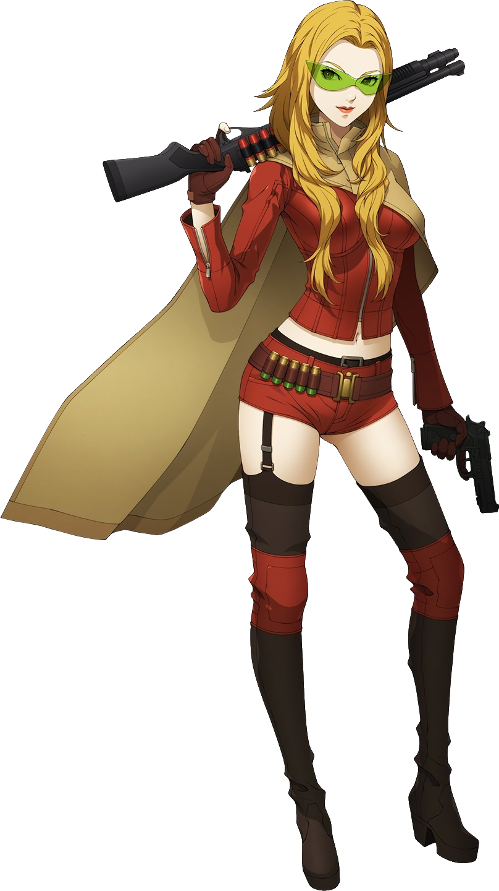
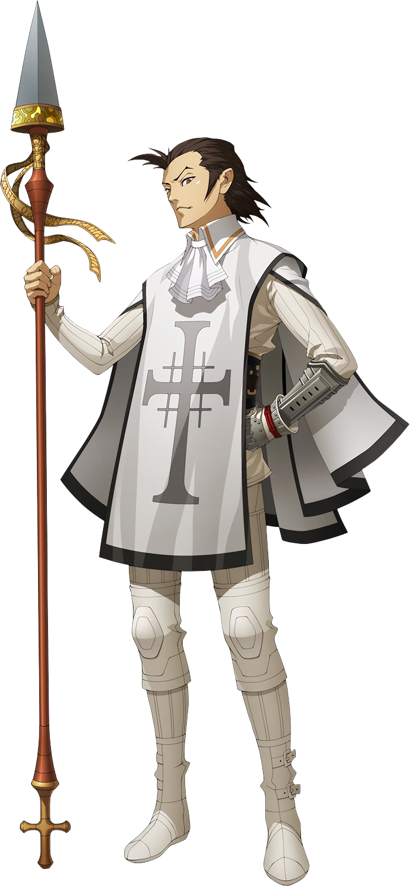
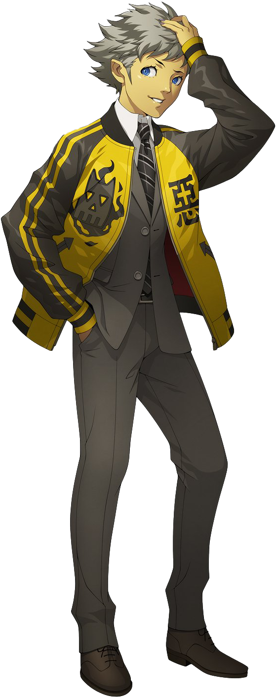
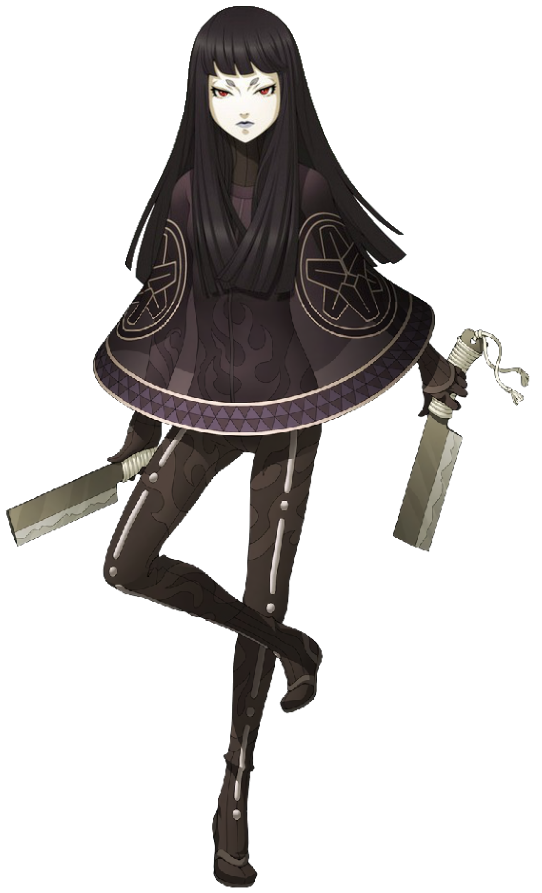

| Shin Megami Tensei IV Apocalypse | |
|---|---|

|
|
| Nome original: | 真・女神転生 IV Final |
| Ano de lançamento: | 2016 no Japão e no Ocidente |
| Plataforma(s): | Nintendo 3DS |
Shin Megami Tensei IV Apocalypse
Shin Megami Tensei IV Apocalypse, também conhecido como Shin Megami Tensei IV Final no Japão, é uma continuação do quarto jogo numerado da série Shin Megami Tensei desenvolvido pela Atlus para o Nintendo 3DS. Este jogo ocorre em uma linha do tempo alternativa do jogo anterior.
| Contents |
|---|
1. Plot
Numa Tóquio pós-apocalíptica, Nanashi é morto por demônios em uma busca por suprimentos de rotina, junto com Nikkari e Manabu. No pós-morte, um demônio chamado Dagda se oferece para ressuscitá-lo em troca de seu serviço como seu assassino de deuses. Pouco depois, os revividos Nanashi e Asahi são manipulados para retirar o selo de Krishna, uma divindade malévola que pretende destruir o universo e recriá-lo à sua própria imagem, quer a humanidade o deseje ou não. Krishna faz Asahi como refém a fim de forçar Flynn a se render a ele, com a intenção de forçar Flynn a se tornar seu próprio assassino de deuses, a fim de tornar seu sonho realidade. Ele também libera a monstruosa serpente Shesha para começar a colher almas humanas para seus planos. Nanashi e Asahi decidem derrotar Krishna e Shesha e consertar seus erros. Nanashi e seus companheiros derrotam Shesha, se infiltram na base de Krishna em Tsukiji Konganji, derrotam Krishna e resgatam Flynn. O grupo então decide derrotar Merkabah e seus anjos e Lúcifer e seus demônios. Nanashi tem a opção de ficar do lado de Merkabah, onde Tóquio é destruída e um reino de Deus é estabelecido em Mikado. Ele também pode ficar do lado de Lúcifer, done Mikado é queimada até sobrarem apenas cinzas e o mundo se torna uma absoluta anarquia. Em ambos os casos, Flynn sai e permanece desaparecido. Se Nanashi permanecer do lado da humanidade, uma enorme batalha tripla se seguirá, Lúcifer e Merkabah serão mortos e a humanidade sairá vitoriosa.
2. Personagens





